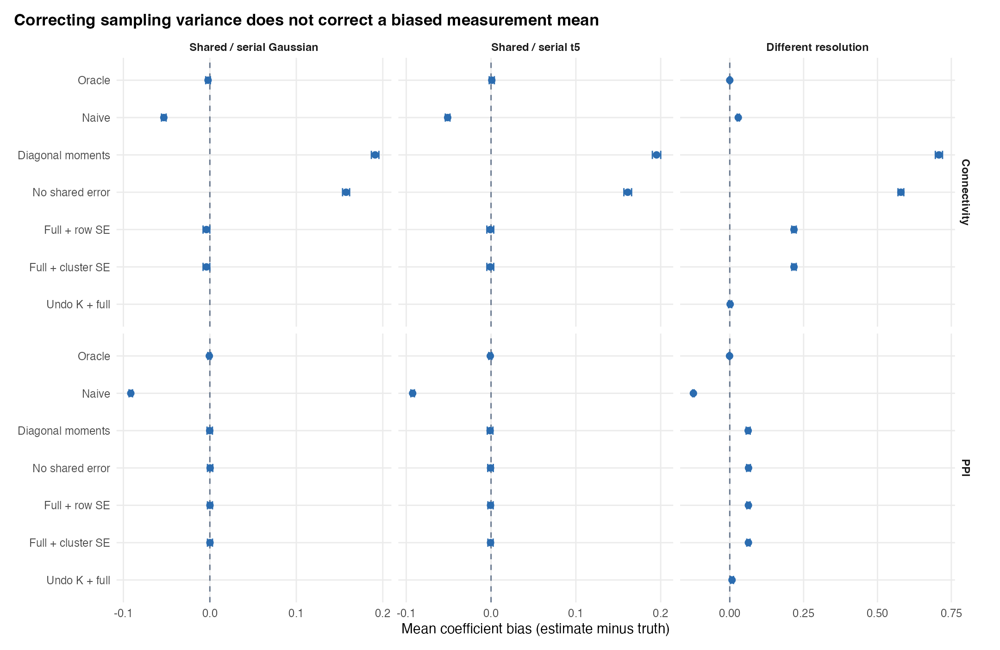
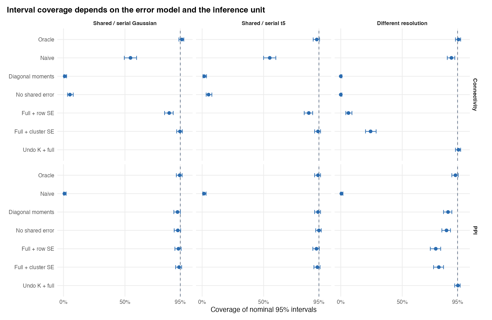

In medusa, decon_connectivity_repair(..., shared_error = "auto") implements per-trial M-MOMS predictor disattenuation, task-free cross-parcel shared_noise_loading / unit_error_cor error-moment subtraction (err_xy), and HKSJ participant-level random-effects pooling (Step 6). This research chapter investigates what lies beyond diagonal per-trial M-MOMS: unequal regional source resolution (\(K_s \neq K_t\)), full cross-trial error covariance blocks (\(\Omega_{ss}, \Omega_{st}\)), likelihood-only finite-basis source reconstruction, and participant-cluster estimating equations.
Summary of Findings
Attaching diagonal trial SEs to ordinary M-MOMS disattenuates independent white measurement noise, but full latent connectivity inference faces three deeper structural requirements: unbiased source resolution, cross-parcel/cross-trial shared-error moments, and participant-cluster uncertainty calibration.
Recover an unbiased source mean (or model resolution explicitly): Regularized continuous deconvolution yields \(\mathbb{E}[\widehat a_r \mid a_r] = K_r a_r\) with \(K_r \neq I\). In our controlled unequal-resolution experiment (\(K_s \neq K_t\)), full noise-moment subtraction alone estimated connectivity as 0.767 when truth was 0.550. Inverting known, well-conditioned resolution operators restored recovery to 0.551.
Propagate shared errors and cluster at the participant level: Under unbiased source measurements with strong serial (\(0.55\)) and shared cross-parcel (\(0.45\)) Gaussian noise, the full cross-trial corrected-score estimator recovered 0.546. Participant-cluster intervals covered truth in 94.8% of repetitions, whereas row-based intervals covered only 86.0%.
Respect finite-participant limits: With only 12 participants, asymptotic cluster sandwich intervals undercovered (91.8% connectivity coverage)—motivating the HKSJ \(t\)-distribution small-sample pooling used in medusa::decon_connectivity_repair().
1. Define the neural relationship and the measurement relationship
For participant \(g\) and trial \(i\), define a centered task variable \(z_{gi}\) and latent source amplitudes:
\(\beta\) is the seed–target association at \(z=0\); \(\delta\) is its task modulation (PPI). A general linear measurement interface across all trials of participant \(g\) is:
Multiplying a smoothed or ZCA-whitened seed by the task modulator \(z\) afterward does not match smoothing the latent interaction—which is why decon_connectivity_repair() defaults to use_whitened = FALSE.
2. Three workable measurement models
A. Likelihood-only coefficients in a modest source basis
Represent each region’s BOLD series using a prespecified, low-dimensional neural source basis passed through its learned HRF:
When \(G_r\) has full column rank (e.g., well-spaced trial impulses or low-dimensional epoch bases) and is fit via unpenalized GLS in whitened coordinates,
This provides an exact unbiased additive measurement-error model (\(K_r = I\)), closely paralleling likelihood-only coefficient reconstruction in REPAIR (Abdulrahman & Henson, 2016). In likelihood_only_bridge.R (16 source amplitudes, 180 BOLD volumes, distinct regional HRFs, shared/serial AR noise), source operators satisfy \(AG = I\) to 8.88e-16, and a 10,000-draw Monte Carlo check matches analytical source SDs within 1.5%. Its trade-off is design conditioning: rapid jittered event schedules or omitted sustained activity can make unpenalized \(G_r\) collinear or misspecified.
B. De-penalize only identifiable contrasts
For a linear Gaussian posterior with precision \(C_{\rm post}^{-1} = J + P_{\rm prior}\), likelihood information \(J\) is recoverable only on subspaces where \(J\) is well-conditioned. In likelihood_only_bridge.R, the full 180-column continuous convolution matrix has numerical rank 178, confirming why continuous TR-grid deconvolution cannot simply drop its penalty globally without projecting onto identifiable trial/window contrasts first.
C. Retain resolution \(K_s, K_t\) inside a joint latent Gaussian model
When unshrinking is ill-conditioned, \(K_s\) and \(K_t\) can be retained explicitly inside a joint Gaussian marginal likelihood over \((\widehat a_{s,g}, \widehat a_{t,g}) \mid z_g\). In joint_gaussian_demo.R (known unequal \(K_s \neq K_t\) and known \(\Omega\)), maximum likelihood recovered connectivity 0.507 (truth 0.550) and PPI 0.336 (truth 0.350) with a positive-definite Hessian, trading stronger distributional assumptions and computation for exact handling of non-identity resolution.
Gaussian conditional-mean calibration variant
Let \(m_s = E(a_s \mid \widehat a_s, z)\) under a Gaussian seed prior. With independent regional errors, \[
E(\widehat a_t \mid \widehat a_s, z) = K_t\{Z\gamma + \beta m_s + \delta\operatorname{diag}(z)m_s\},
\] requiring design columns \(K_t m_s\) and \(K_t \operatorname{diag}(z) m_s\) rather than multiplying \(m_s\) by \(z\) after applying \(K_t\), plus an explicit shared-noise regression term \(\Omega_{ts}(K_s V_s K_s^\top + \Omega_{ss})^{-1}(\widehat a_s - K_s \mu_s)\) whenever \(\Omega_{ts} \neq 0\).
3. Full cross-trial corrected-score estimating equations
For unbiased source measurements (\(K_s = K_t = I\)), form participant \(g\)’s centered trial design \(\widehat D_g = D_g + U_g\) for columns \([a_s,\, z,\, a_s z]\) and define full cross-trial error moments \(C_g = E(U_g^\top U_g)\) and \(c_g = E(U_g^\top v_g)\) (including run-centering projections applied consistently to both data and \(\Omega_{ss}, \Omega_{st}\)). Solving the summed participant corrected score (Nakamura, 1990; Buonaccorsi, 1996):
source("measurement_error_models.R")fit <-fit_corrected(blocks, mode ="full")stopifnot(fit$ok)fit$estimate # neural association, task main effect, PPIfit$se # participant-cluster score SEs
The prototype refuses indefinite corrected information matrices rather than silently regularizing unidentified designs.
4. Conditional simulation benchmarks (400 repetitions per scenario)
Each scenario simulates 400 repetitions of \(G = 60\) participants (Few participants uses \(G = 12\)) with 24 trials per participant, true connectivity \(\beta = 0.55\), task main effect \(\gamma = 0.25\), and PPI \(\delta = 0.35\) (Null sets \(\beta = \delta = 0\)), under serial trial error correlation \(0.55\) and shared cross-region error correlation \(0.45\).

Figure 10.1: Mean coefficient bias across three stress scenarios. Bars show plus/minus 1.96 Monte Carlo SE; horizontal scales differ across columns. The oracle uses true neural amplitudes. Empty Undo K rows mean that method was only evaluated in the unequal-resolution scenario.

Figure 10.2: Coverage of nominal 95% normal intervals. Bars are exact binomial 95% intervals for the Monte Carlo coverage probability, not individual-model confidence intervals. The dashed reference is 95%; all horizontal axes span 0–100%. Full + row SE and Full + cluster SE have the same point estimate.
Selected conditional simulation benchmarks (400 repetitions per row).
Scenario
Method
Effect
Mean
Bias
Coverage
Coverage MCSE
Different resolution
Full moments, cluster SE
Connectivity
0.767
0.217
24.2%
2.1%
Different resolution
Full moments, cluster SE
PPI
0.413
0.063
79.8%
2.0%
Different resolution
Resolution inverse + full moments
Connectivity
0.551
0.001
95.8%
1.0%
Different resolution
Resolution inverse + full moments
PPI
0.358
0.008
95.2%
1.1%
Few participants
Full moments, cluster SE
Connectivity
0.556
0.006
91.8%
1.4%
Few participants
Full moments, cluster SE
PPI
0.364
0.014
89.2%
1.5%
Serial + shared Gaussian
Full moments, cluster SE
Connectivity
0.546
-0.004
94.8%
1.1%
Serial + shared Gaussian
Full moments, cluster SE
PPI
0.350
0.000
94.0%
1.2%
Serial + shared t5
Full moments, cluster SE
Connectivity
0.549
-0.001
94.2%
1.2%
Serial + shared t5
Full moments, cluster SE
PPI
0.349
-0.001
93.8%
1.2%
Three practical lessons bridge these benchmarks back to empirical medusa analyses:
Omitting shared cross-parcel error creates severe false connectivity: Under Null serial + shared, ignoring \(\Omega_{st}\) (Zero shared covariance) falsely rejects in 95.0% of repetitions, whereas subtracting \(\Omega_{st}\) drops connectivity false positives to 5.0%—directly motivating shared_error = "auto" in Step 6.
Unequal source resolution requires matched HRF/inverse scales: When two parcels have markedly different effective smoothing (\(K_s \neq K_t\)), naive attenuation and resolution distortion can partially cancel (0.579) while variance-only disattenuation overshoots (0.767). Keep regularization policies matched across seed and target parcels and control shared task main effects carefully (Cole et al., 2019).
Small-\(G\) cohorts require finite-sample \(t\)/HKSJ adjustments: Normal asymptotic cluster SEs undercover at \(G = 12\) (MacKinnon, Nielsen & Webb, 2022), which is why decon_connectivity_repair() uses HKSJ \(t\)-intervals over participant slopes rather than normal row or unadjusted cluster \(z\)-intervals.
Reproducibility and complete 74-row simulation table